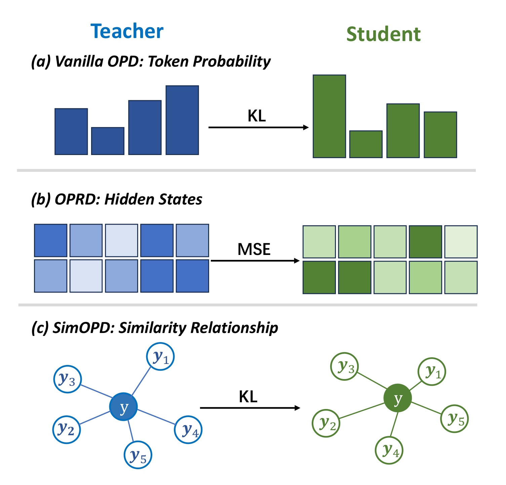
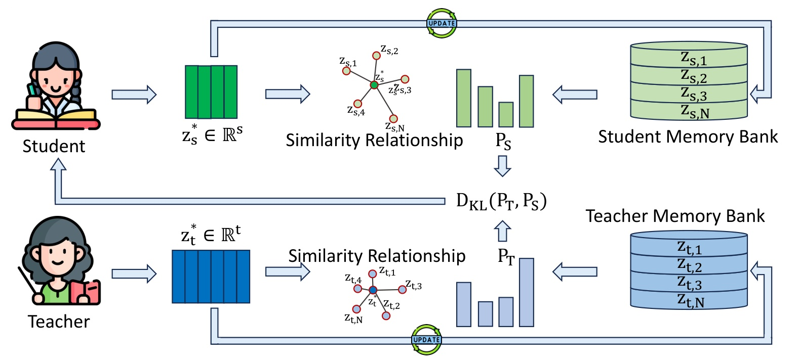
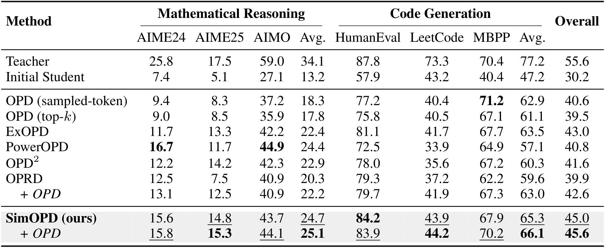
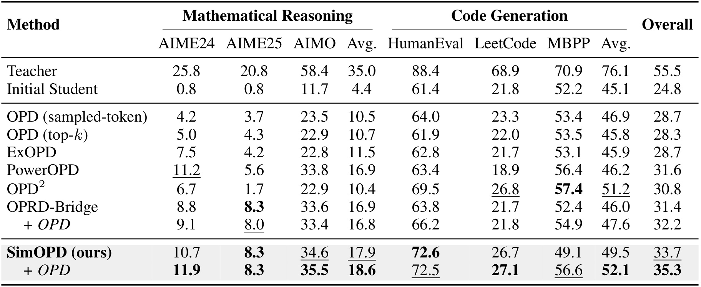
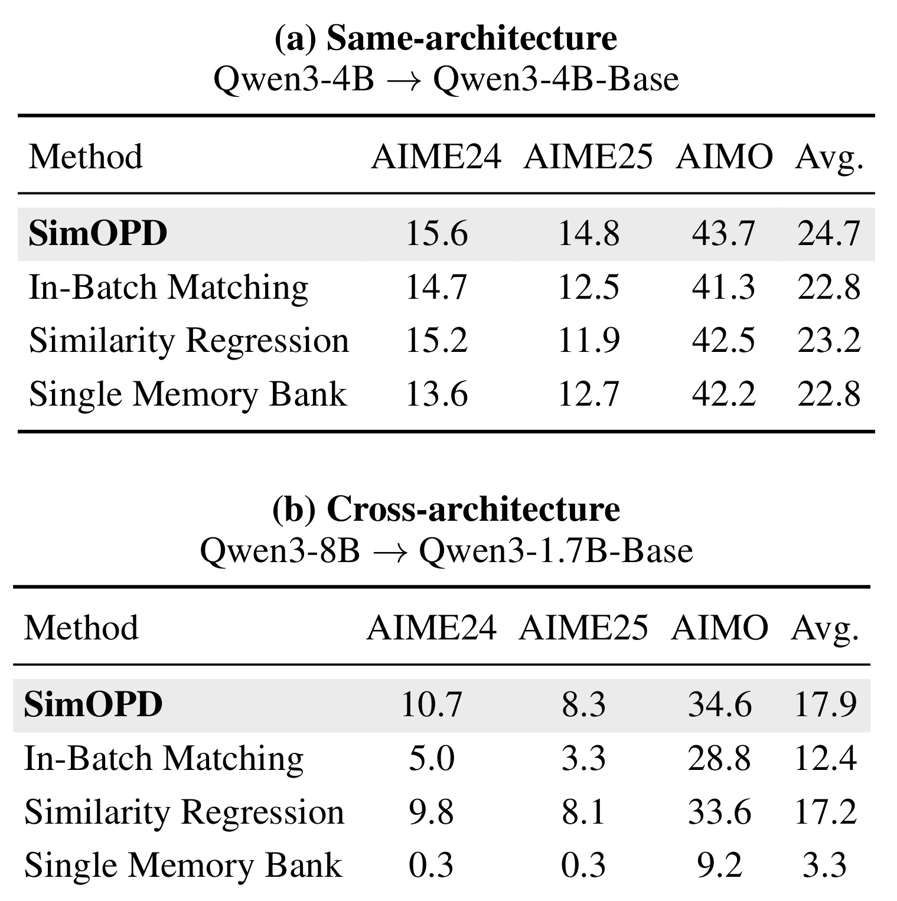
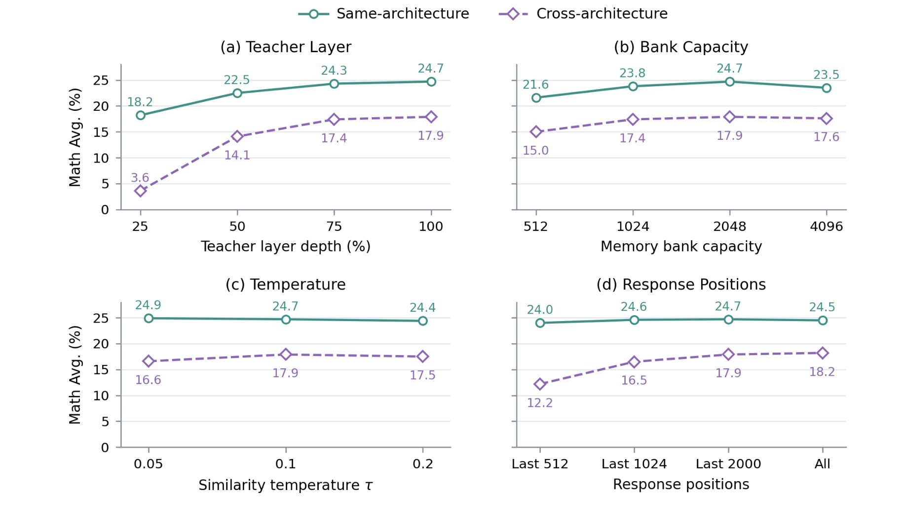
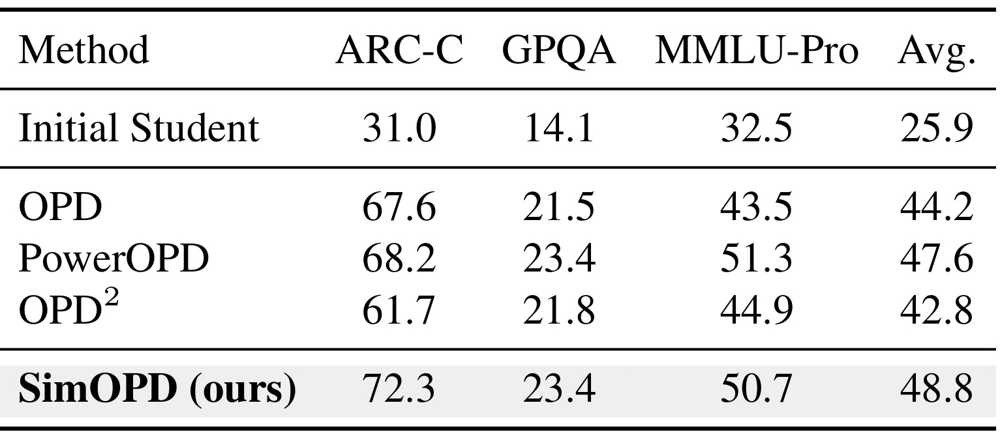
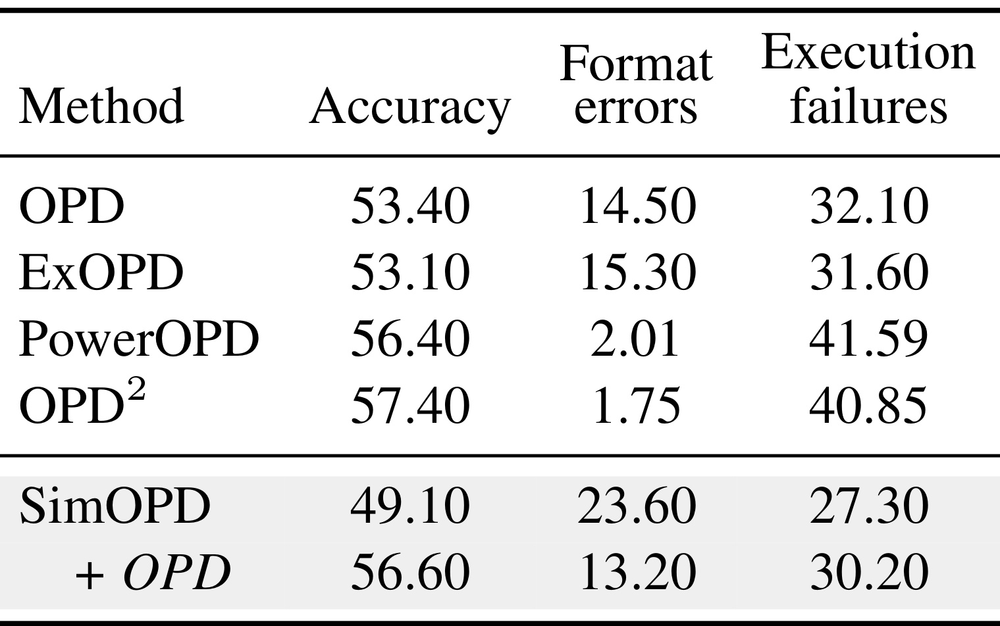
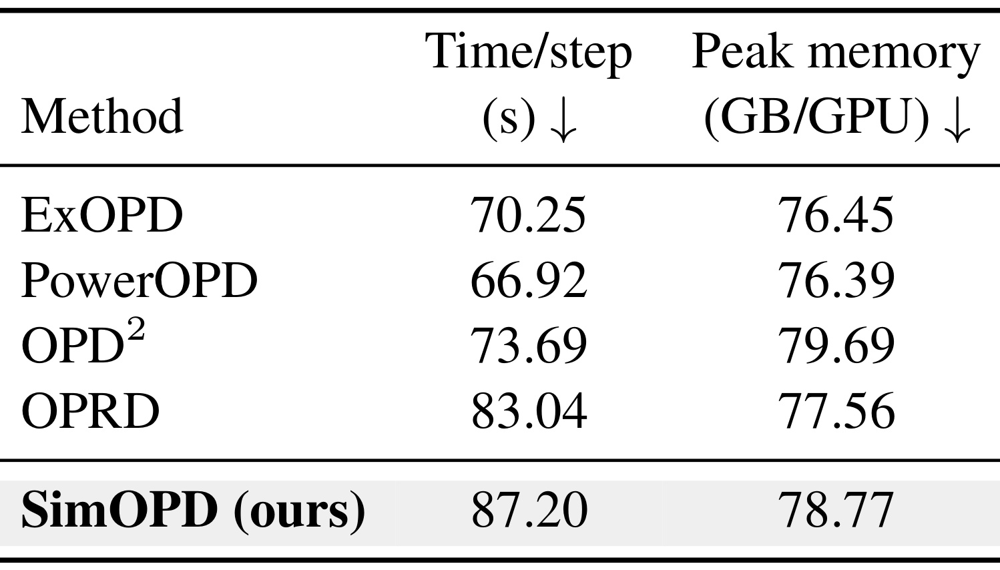

SimOPD：通过响应间关系传递教师内部知识
本文由浙江大学与蚂蚁集团合作完成，第一作者 Kai Tang 同时署名两机构，通讯作者为 Haobo Wang。论文研究大模型在策略蒸馏，把教师内部表示转化为学生可学习的响应相似性分布。论文于 2026 年 10 月 16 日首次提交，入口为 SimOPD: Relational Knowledge Transfer for On-Policy Distillation。本轮核验未找到独立代码入口，因此下文的实现和指标均依据原论文，而非第三方复现。
在策略蒸馏如何有效提取教师知识仍是难点：词元概率监督可能没有充分利用内部知识，直接匹配隐状态又迫使学生向教师的特征空间迁移，并使跨架构知识传递复杂化。
1. 背景和问题
1.1 学生自己生成，教师提供怎样的反馈
在策略蒸馏的出发点是训练数据与实际推理轨迹之间的错位。监督微调通常学习固定示范，推理时却必须接续自己产生的前缀；早期一个小偏差就可能把后续状态带出示范分布。强化学习可以让学生在自己访问的轨迹上学习，不过数学或编程常用的最终正确性奖励很稀疏，复杂推理链中间许多选择没有直接反馈。在策略蒸馏让学生先回答问题，再请冻结的教师评价这些回答，从而同时利用真实学生轨迹与较密的监督。这里的“在策略”限定了响应由当前学生采样，并不意味着教师也被训练，或者所有历史缓存始终来自最新参数。
设提示来自训练集，学生按自己的条件分布生成一段响应，教师对同一提示和同一学生前缀计算下一词分布。传统输出空间蒸馏比较两套下一词概率，原文采用反向散度作为描述：
符号解释：θ 是学生参数，x 是提示，y 是学生采样的响应，T 是响应长度，t 是词元位置，pθ,t 与 pT,t 分别是学生和冻结教师在相同前缀下的下一词概率，期望覆盖提示和学生响应。散度方向由学生指向教师，衡量学生把概率质量放到教师不认可词元上的程度。它与后面响应关系蒸馏中“教师到学生”的散度方向不同，不能因为都叫蒸馏就混用。输出概率可以直接表达某个词元是否合适，但内部表示中哪些回答彼此接近、哪些解法组织方式类似，没有以显式对象进入此目标。
原文也给出强化学习风格的实现：把学生实际采样词元处的教师与学生对数概率差当作反馈，再对学生的对数概率求梯度。
符号解释：rt 是第 t 个已采样词元的反馈，πT 和 πθ 为教师与学生策略，y小于t表示之前的响应前缀，yt为当前采样词元。教师认为比学生自己更合理的词元得到正向反馈，反之受到压低。这里的反馈来自概率差，不要求提供逐步人工标注；同时它仍受输出词表与局部概率结构约束，不能自动等同于完整的过程正确性判定。
符号解释：JOPD 是上述反馈对应的策略优化目标，∇θ表示对学生参数的梯度，其他符号沿用前式。该表达说明词元概率监督如何影响生成行为，而本文主方法直接从当前响应的学生隐表示反向传播，两条梯度路径可以互补。必须区分“用学生生成的样本”和“所有损失都采用同一种策略梯度估计器”，否则容易误读主方法的训练方式。
1.2 表示监督的收益与空间约束
为了从教师内部取出更多信息，OPRD 对齐师生的归一化隐藏状态。它用响应位置与层的细粒度对应关系构造误差：
符号解释：ℓ是监督层，带横线的h是除以自身二范数后的隐状态，sg表示停止梯度，δ是某层某位置的平方距离。归一化缓解向量幅度差别，却仍要求两个向量具有可比较的坐标和维度。即使维数一致，某个坐标在两模型中承担的编码作用也未必相同，逐坐标相等比保留任务相关知识提出了更强约束。
符号解释：集合I指定监督哪些层，竖线表示层数，mt是是否监督该响应位置的二值掩码，分母为被监督词元数。该目标同时平均位置和层上的表示误差；如果模型隐藏维度不兼容，必须先建立可比较空间。OPRD-Bridge为此使用投影和额外校准阶段。论文要改进的正是知识载体的选择：教师内部知识值得使用，但未必需要让学生在同一套坐标里编码。

Figure 1 从上到下比较三种监督单位，蓝色教师与绿色学生并不代表特定数据集成绩，而是说明信息流。第一行的柱状图代表下一词概率，散度直接对齐输出；第二行的方块表示隐藏状态，均方误差要求特征坐标接近；第三行则把新回答与若干历史回答的关系画成围绕中心的连接。读第三行时应关注“哪个历史响应与当前响应较近”的关系，而不是要求左右图中节点落在相同位置。右侧空间可以重排或旋转，只要相似分布符合教师提供的目标就能获得监督。这幅图因而是监督范式对比，不是本文真实训练样本的可视化，也没有证明响应关系必然对应推理正确性。
这个差异让本文与对比学习有关联，但不能直接把它理解成给正确回答拉近、给错误回答推远。论文没有依赖正确与错误标签去配对正负样本，而是把教师内部几何当作软关系目标。如果教师对两个响应的表示比较接近，学生就需要在自己的空间内反映这种关系，至于这种接近来自解题策略、文本形式还是语义，原文没有逐项标注。由此也能理解方法的潜在弱点：关系是内部知识的一种投影，并非完整复制；序列池化会压缩词元细节，格式要求可能因此被淡化。后面跨尺寸模型在编程格式上的失误，正好为这种担忧提供具体证据，而不是只靠概念推测。
这里还有一个容易忽略的区分：教师认可的局部概率、教师拥有的内部表征，以及学生最终能表现出的能力，是三个不同层次。增加内部监督通道，只能说明训练可以接触更丰富的信号；是否有效还取决于提取方式与学生承载能力。本文用两个规模设置和分开的任务训练来观察这一点，并没有把相似度当成不需验证的正确性标签。
论文的适用问题因此很明确：在已有在策略训练基础上，尝试增加或替换教师反馈的表示形式，让学生保留自己的编码自由。它没有提出新模型骨干，也没有改变最终解码算法；论文所谓跨架构实验仍在 Qwen 家族中改变教师和学生规模，尚不能等价于任意异构模型都能无损迁移。对大模型研究的价值在于把输出监督与表示监督之间打开第三种选择，后续效果则需要由任务、缓存和成本实验分别检验。
2. 方法
2.1 响应表示与成对动态记忆库
方法从学生当前生成的一批响应开始。教师与学生都读取相同的提示及学生响应，但各自提取自己的隐藏状态。对指定响应位置的向量先分别归一化，再跨所选层和位置求均值，得到一个响应级向量。该响应始终是在提示条件下计算的，虽然池化仅选择响应位置，其隐藏状态已经能通过注意力利用前面的提示与响应上下文。论文默认只使用末层以及最多最后两千个响应词元，以限制隐状态处理量；这里不是把原始提示或整段响应丢弃后重新编码。
符号解释：h是某模型某层某个选定响应位置的隐状态，横线表示逐向量归一化，I是所选层集合，Ts是实际选中位置数，z是平均后的响应表示。用Ts替代原文在此处复用的T，是为了区分选中位置数和完整响应长度，计算含义一致。先归一化再平均不等于对原始隐状态直接求均值；接下来采用余弦相似度，还会比较响应向量的方向。池化能让不同长度响应形成固定维向量，却可能稀释局部代码格式或关键中间步骤。
教师与学生各维护一个有限容量的队列，队列元素按照同一批响应的相同顺序插入。两个队列不需要相同的特征宽度，但必须具有相同的响应索引：
符号解释：BT和BS分别是教师、学生记忆库，N是当前已有条目数，K是容量上限，dT与dS是各自隐藏维度，下标j同时指向同一个历史响应。真正共享的是响应身份与排列，不是隐藏向量的坐标系统。 若师生队列在删除或插入时错位，虽然尺寸和损失都能正常运行，蒸馏却会比较不同历史回答，因此配对不变量是实现正确性的核心。

Figure 2 的上半部分是学生，下半部分是教师，两者分别把当前响应变成向量，再与右侧各自的记忆库比较。中间两组柱状图是对同一批历史索引形成的分布，汇合到教师指向学生的散度损失；损失反向影响学生的当前表示。图中表示向量宽度不同，是为了强调不要求把学生向量投到教师空间，不能把两个柱状图误认为隐藏特征维度的概率分布。柱状图每一项对应的是一条历史响应，因此两边即使隐藏维数不同，也都能生成长度为N的分布。上、下外侧更新箭头表示当前响应表示随后加入各自队列，并不表示教师参数随学生一起更新。
实际次序比示意箭头更关键。队列初始为空，第一批仅用来填充参考，不更新学生；当已有参考至少两条时，才进行分布匹配。每个训练更新内部，教师和所有已存向量都保持固定，只让当前学生向量通过损失获得梯度；更新参数后再把此前已提取的师生向量对入队，超出容量就成对删除最旧条目。这意味着学生缓存保存的是产生该条目时的历史参数表示，而不是每步用最新学生重算的表示。论文采用动态先进先出更新来逐渐刷新参考，避免为整个历史集反复前向计算；它也引入表示滞后的权衡。读图时若把右侧学生库理解为可训练参数，或认为梯度贯穿所有历史响应，就会把实现代价与训练语义都读错。
缓存与当前样本的时间差并不取消在策略属性：当前生成依旧来自当前学生，历史库承担的是比较参照。论文没有系统研究缓存年龄与学习速度的交互，因此不能声称滞后完全没有影响。原文的队列容量消融说明有限范围内效果稳定，但不能证明任意大库都更好。由于历史向量只用于训练，训练结束后丢弃两套队列，不改变学生网络结构与推理路径；部署侧也就不需要存放教师或逐次执行关系查询。
2.2 相似度分布匹配与联合训练
得到新响应向量后，教师只查询教师库，学生只查询学生库，分别计算余弦相似度。相似度不是直接拿来做逐值回归，而是经共享温度归一化为对历史响应的概率分布。这样一个历史响应的权重同时取决于它自身相似度和其他参考的相似度，监督强调的是相对关系。
符号解释：M指教师或学生，星号向量是当前响应表示，j与r索引历史响应，sim为余弦相似度，τ是正温度，PM是该模型认为当前响应接近哪条历史响应的分布。温度低会放大邻近关系差别，温度高会软化分布。默认τ为零点一。相同温度并不要求两套向量相同，而是让各自计算出的关系以可比较的概率形式表达。若队列只有一项，分布恒为一，无法提供有效关系区分，这也解释了算法至少需要两条参照的条件。
符号解释：PT是冻结教师提供的历史相似分布，PS是学生分布，期望对训练提示和当前学生生成响应求取。这里以教师为软目标，使用教师到学生的正向散度，推动学生提高教师重视的历史关系的概率。梯度只通过当前学生表示传播，历史学生向量被停止梯度。输出维度由参考响应数决定，表征维度仍由各模型自己决定，这是免投影迁移的技术关键。这个目标并没有要求学生复制教师每一词元的输出概率，因此与概率监督能同时存在。
符号解释：Ljoint是联合训练目标，第一项是响应关系蒸馏，第二项为原文实验中的采样词元OPD监督，λ是其权重，实验固定为一；这是根据原文联合设置整理的表达，并非新增算法。关系项传递教师内部几何，词元项直接约束局部输出选择，二者权重与损失尺度会影响互补程度。原文只报告这个固定系数，不能从联合成绩反推出关系损失在所有任务里都应占相同权重。尤其学生更小时，局部格式约束和全局响应关系之间的平衡可能更敏感，后面的编程任务正展示这一点。
3. 实验结果
3.1 训练与评估口径
实验包含数学推理和代码生成两个领域，两个领域分别训练模型，再把两个域的平均成绩做等权汇总。因此Overall是实验汇总指标，不是一份同时学数学与代码的检查点在所有任务上的得分。同架构设定为Qwen3-4B教师到Qwen3-4B-Base学生；跨架构设定为Qwen3-8B教师到Qwen3-1.7B-Base学生。后者验证了不同容量与隐藏宽度之间的迁移，但都来自同一家族，不能外推到不同分词器、完全不同骨干或多模态模型。
数学训练使用DAPO-Math-17K，评估AIME 2024、AIME 2025、AIMO。指标为温度零点七下每题独立采样十六次的Avg@16，不是十六次中任意一次成功便算成功的pass@16。代码训练使用Eurus去重代码子集，在HumanEval、LeetCode、MBPP上按测试执行评估pass@1。两个域的原始任务与评价协议不同，Overall通过等权平均域均值提供简洁比较，不能被解释成用户请求的真实综合成功率。
训练统一运行两百步，使用八张A100 80GB，AdamW学习率十的负五次方，全局每批十六条响应，每个提示采两条响应；过滤超过三千零七十二词元的提示，训练生成采用非思考提示、温度一、最大响应四千零九十六词元和top-p一。框架基于verl与vLLM。主要参照包括采样词元与top-k两种OPD、ExOPD、PowerOPD、OPD²以及直接表示对齐OPRD；跨架构后者使用Bridge投影。相同训练步数与硬件使成绩比较更清晰，不过不同目标每步时间不同，因而不是严格等计算量竞争。
3.2 同尺寸与异尺寸模型的主结果

Table 1 的前三个任务组成数学域均值，中间三个组成代码域均值，最后一列再平均这两个域；所有分数都是百分数。初始学生的数学与代码均值分别为十三点二和四十七点二，说明代码基础能力明显更强。纯SimOPD达到二十四点七和六十五点三，Overall四十五点零；数学相对PowerOPD二十四点四只有零点三个百分点优势，代码相对最强独立基线ExOPD六十三点五领先一点八个百分点，因而不能说每项都有很大提升。与直接表示对齐OPRD相比，两域分别提高四点四和五点七个百分点，为改用关系目标提供更有力度的证据。
缩进的“加OPD”行代表联合训练，不能与上一行纯关系方法混为一谈。联合后数学二十五点一、代码六十六点一，Overall四十五点六，相对最强基线ExOPD四十三点零提高二点六个百分点。论文摘要所说的同架构二点六提升对应这一联合版本，而不是纯SimOPD。单任务上也能看到互补不是处处单调：HumanEval由八十四点二小降到八十三点九，但MBPP由六十七点九升到七十点二，域均值仍提高。表中同架构教师代码均值七十七点二，学生联合版仍有明显差距，因此结果支持更有效蒸馏，并不支持整体超越教师的说法。表格既保留高分也保留弱项，才便于判断增益是否来自特定任务。
同一张表中PowerOPD在AIME24和AIMO仍取得更高独立分数，说明方法之间存在任务偏好。关系目标可能让较多任务维持较好平衡，但这与统治每个任务的说法有本质差别。选择蒸馏方案时，应先确定目标任务的权重，再看合并分数是否与真实需求一致。

Table 2 的列结构与上一张相同，但学生缩小到一点七十亿参数，初始数学均值只有四点四。纯SimOPD将数学提升到十七点九，高于PowerOPD与OPRD-Bridge的十六点九；代码均值四十九点五，在独立方法中仍落后于OPD²的五十一点二。因此它的整体优势来自跨域均衡，不是独占所有领域第一。纯方法Overall三十三点七，已高于OPRD-Bridge加OPD的三十二点二；进一步联合词元监督后，数学十八点六、代码五十二点一，Overall三十五点三，相对最强基线三十二点二提高三点一个百分点。三十三点七是独立方法结果，三十五点三与加三点一才是联合训练结果。
细看代码三列能理解联合监督为何更重要：纯方法HumanEval达到七十二点六，相对OPD²六十九点五有三点一个百分点提升；LeetCode二十六点七略低于OPD²二十六点八；MBPP却只有四十九点一，低于初始学生五十二点二。这是一个直接的退化案例，不能被Overall改善掩盖。加入OPD后MBPP恢复到五十六点六，HumanEval基本稳定在七十二点五，带动代码域增加二点六个百分点。论文由此强调响应关系与词元概率之间的互补性，这比“隐藏知识足以代替输出监督”更符合证据。结果中的跨架构优势也不意味着任何小学生都能无投影迁移，因为这里仅验证了固定教师、学生、两百步训练和六个任务，尚缺少家族之间的泛化对照与重复随机种子区间。
另一个值得关注的差别是初始学生的能力分布：其代码均值已超过数学许多，数学域相对提升看起来更大，不能简单认为数学监督效率更高。比较两个域的相对增幅，必须考虑起点与任务难度；论文主要通过共同教师学生及各自基线控制比较，并没有提供两域等难度校准。
3.3 哪些设计真正影响关系迁移

Table 3 是原文一个完整的上下组合表，上半是同架构，下半是跨架构，比较的均为数学域。把历史队列改成仅当前批内匹配后，同架构均值由二十四点七降到二十二点八，跨架构由十七点九降到十二点四，分别损失一点九和五点五个百分点。它说明十六条响应的即时参照不及历史库丰富，尤其较小学生需要更广的关系背景；但它并不能单独证明优势完全来自时间跨度，因为两者同时改变了参考数量与样本多样性。若要分离这两种效应，还需等规模参考集合的额外实验。
保持双库但改用余弦值均方回归，同、跨架构降到二十三点二和十七点二，分别比归一化分布匹配少一点五和零点七。这个差距支持相对分布比绝对相似值更适合作为软监督，但没有证明KL是唯一有效散度。最后单记忆库让学生和教师共同查询教师向量；跨架构为此使用MLP把学生查询投到教师维度，均值却跌至三点三，甚至弱于初始学生四点四。同架构该变体也仅二十二点八。由此可见，两套独立参考空间不仅是维数兼容的小技巧，还是避免坐标依赖的实质选择。不过该消融也包含投影优化难度，不能把失败全归结于投影表达能力不足；原文没有系统比较更复杂的校准策略。这张表更稳妥的结论是当前双库方案在已测设置下优于三个具体变体。
这组消融都固定在数学评估上，没有同时给出代码域的变体结果。因此其结论应落在数学关系蒸馏机制上，不能把双库的必要程度或分布目标的优势幅度直接照搬到格式敏感的代码生成任务。

Figure 3 四个面板的纵轴都是数学Avg@16，绿色实线代表同架构，紫色虚线代表跨架构；每个面板只改变一个因素。教师层深从四分之一改到末层时，同架构从十八点二升至二十四点七，跨架构从三点六升至十七点九，分别提高六点五和十四点三个百分点，说明浅层并不能提供等价关系监督。后两级深度的增益趋小，支持默认选择教师末层。容量从五百一十二升到两千零四十八确有帮助，但继续到四千零九十六没有继续改善，同架构反而从二十四点七到二十三点五。队列扩大不是无条件收益，可能同时增加旧表示与不相关参考，具体原因仍需要实验拆分。
温度面板在零点零五、零点一、零点二的范围内相对平稳，同架构仅变化零点五，跨架构变化一点三个点，这只能支持该测试区间内不高度敏感。响应覆盖则对小学生更关键：最后五百一十二到最后两千词元，同架构提高零点七，跨架构提高五点七；完整响应相对最后两千词元，两设置差距都在零点三以内。因此末两千词元在这批任务中取得了计算与效果的合理折中。后缀隐藏状态能利用更早上下文，是作者对这一现象的解释；图中没有直接测量前部信息的保留量，不能据此声称任意长链都可无损压成后缀平均。复现时应优先保持层选择与覆盖位置，再考虑缩小缓存，避免仅看容量稳定就把所有表示提取细节随意改变。
图中没有误差棒，容量和温度附近的小幅波动无法区分随机性与系统差异，最可靠的是浅层与末层、短后缀与较长后缀这些较大幅度的趋势。
3.4 域外迁移、格式失败与训练代价

Table 4 用同架构数学蒸馏的检查点评估ARC-C、GPQA和MMLU-Pro，分别覆盖科学问题、较难科学推理及综合知识推理。这些不是代码训练分支的成绩，也不是额外进行了这些任务训练的结果。初始学生平均二十五点九，SimOPD达到四十八点八，超过PowerOPD四十七点六一点二个百分点。不过分项结构并不均匀：ARC-C七十二点三比PowerOPD六十八点二高四点一；GPQA同为二十三点四；MMLU-Pro五十点七则低于PowerOPD五十一点三零点六。均值第一主要由ARC-C提升拉动，不能写成三个域外基准全面领先。
从这张表可以得到的积极信号是，数学训练没有只把有限任务分数向上推，至少在这三项域外任务上存在可观察迁移，而且相对初始学生的提升较大。它依旧不能证明方法具备普遍知识增益，因为三个任务可能共享推理与答题习惯，也没有更开放的生成质量评价。表格没有给出随机种子方差或显著性检验，较小的跨方法差值尤其需要谨慎。个人更看重保留ARC-C、GPQA、MMLU-Pro三个分项的原因，是后续若修改池化层或队列策略，可以判断变化来自哪类能力，而不会被一个合并均值误导。域外结果为进一步实验提供动机，不能替代安全、事实性或通用对话评估。

Table 5 把全部被评估样本分成正确、格式错误、其余执行失败三部分，各行加总为百分之百；两种错误率的分母是全部样本，不是仅错误样本。纯SimOPD准确率四十九点一，格式错误二十三点六，执行失败二十七点三；相对OPD，格式错误多九点一个百分点，执行失败少四点八，最终正确率仍低四点三。关系监督并非在每种错误上都恶化，而是格式损失盖过了另一部分改善。这个拆解比单列准确率更能解释为什么一个在人类读起来有一定程序逻辑的输出，会在自动测试里失败。
加入词元OPD后，格式错误从二十三点六降到十三点二，准确率提高七点五至五十六点六，但执行失败反而升到三十点二。这不能简化成逻辑推理也提升了七点五；一部分变化可能是原先无法解析的响应进入执行阶段，分类边界随格式修复发生迁移。论文认为MBPP任务相对简单且对输出约定敏感，直接词元监督在学习约定方面更强，因此联合使用合理。这个解释得到错误分布支持，但表中没有逐题配对迁移矩阵，不能精确追踪哪些题从格式失败变成执行成功。工程上需要把合法输出率与程序测试通过率分开记录，否则纯关系方法的弱项会在综合分数中隐身，甚至把格式修复误认为更深的推理能力增长。

Table 6 的实验条件是八张A100 80GB上的同架构数学训练，报告每步平均壁钟秒数及每张GPU峰值中的最大值，排除了最初五步、评估和存盘。SimOPD每步八十七点二秒，OPRD八十三点零四秒，相差约百分之五，同时数学均值提高四点四个百分点；峰值显存七十八点七七GB，略高于OPRD七十七点五六GB。在表示蒸馏方案之间，额外关系比较的时间增量相对有限，但仍然存在，不能因为最终推理结构不变就声称训练免费。
若改与概率反馈方案相比，代价更显著：PowerOPD每步六十六点九二秒，SimOPD约慢百分之三十点三；ExOPD七十点二五秒，也低于SimOPD。其显存落在表中七十六点三九至七十九点六九GB范围内，只能说明没有超出该组基线区间，并不代表适用于显存紧张的设备。原文没有给出不同容量下的端到端吞吐曲线，也没有单独分解隐藏状态提取与相似矩阵的耗时，因此目前无法准确定位最有价值的优化环节。缓存仅在训练时存在意味着推理不新增结构性查询负担，这与训练成本较高可以同时成立；比较方法时应分别看每步代价、达到目标成绩的总时长以及最终模型服务成本，避免用其中一种替代其他两种。
以论文固定两百步为例，每步延迟的差别会累计为实际GPU占用，较高分数是否值得额外资源，应结合目标质量门槛决定。若能够通过更多廉价的概率蒸馏步骤追平，固定步数排名未必维持；反过来，若关系信号更快达到目标，单步较慢也可能值得。因此缺少质量随总训练时间变化的曲线，是当前效率证据的一项具体空缺。
4. 总结
4.1 我的判断与复现优先级
SimOPD最值得保留的观点是，教师内部知识可以通过响应集合上的关系传递，而不必通过坐标匹配才能使用。响应身份对齐、特征空间独立、关系分布可比这三个条件组合成了具体可执行的方法。论文不是只提出一个抽象的几何类比：双库与单库、历史与批内、分布与回归三个消融都有对应结果，且跨尺寸迁移比同尺寸更依赖历史参考。与此同时，较强最终成绩来自关系与词元监督联合，MBPP失误清楚说明局部输出约定不能靠全局关系自动补齐。
如果复现，我会先固定同架构数学任务，以末层、末两千响应词元、两千零四十八容量和零点一温度复现纯方法，再加系数为一的词元项。这样能先确认关系目标本身可训练，再确认互补收益，而不会一开始就用联合损失掩盖队列错位。实现检查首先关注成对FIFO索引、空库首批不更新、历史向量停止梯度，以及参数更新后入队的其实是更新前提取的表示。只要其中一个条件被悄悄改掉，表面上仍可计算散度，但就已经不是原文报告的方法。
4.2 局限与下一步证据
第一，跨架构目前只覆盖Qwen家族不同规模，尚缺少不同模型家族、分词器与归一化结构的验证。共享词表是前置描述的一部分，更广的异构迁移需要重新核查联合词元监督是否兼容。第二，实验主要是数学和代码，开放对话、长文生成、多模态与安全表现尚未建立，响应平均表示能否保留这些场景的细节仍待检验。第三，缓存学生表示随参数迭代变旧，论文仅探索有限容量，没有系统分析学习率、缓存年龄和相似分布漂移的联动，训练更长时稳定性不能直接沿用。
第四，训练时间高于概率类基线，且显存已接近所用八十GB设备上限；省去投影阶段并不等于降低所有训练资源。第五，主结果缺少多种随机种子的误差范围，小幅域均值优势可能不够稳健，应避免把零点三个点当作确定排序。第六，原文没有独立代码入口可供本轮核验，队列并行同步和掩码实现只能根据文字还原，复现报告需要明确自己的实现差异。
这些约束也决定了阅读本文时应关注的主线：它提供一种可与现有在策略系统结合的监督接口，而不是独立保证能力增长的通用定律。实际采用之前，需要把当前任务对格式、局部词元和完整推理链的要求拆开检验，并同时报告资源消耗，否则单看最终均值容易选错适用场景。
后续首先应补做跨家族实验，以检验“免投影”优势究竟有多宽的适用边界；仅换宽度无法回答表示组织方式完全不同时的可迁移性。其次应跟踪队列条目年龄与当前学生重编码之间的相似度变化，并与周期刷新参考比较，判断旧表示是有效正则还是额外噪声。再次应把MBPP做逐题错误迁移审计，区分格式恢复、程序逻辑改善和分类口径变化，从而更合理地设定联合损失权重。最后值得以总GPU时长为预算重新比较各方法，报告达到某一质量门槛的成本，才能确定关系蒸馏带来的实际性价比。这些是基于原文证据的后续实验建议，并非论文已经完成的结论。